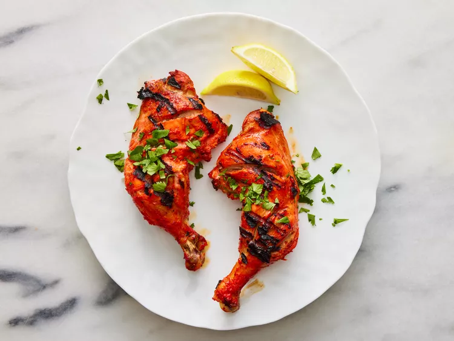

Try this authentic tandoori chicken that's marinated in yogurt and spices, then cooked on the grill instead of a clay oven so you can make it at home. Serve with long-grain basmati rice, grilled veggies, roasted corn on the cob, and a cucumber salad.

Prep Tine: 25mins
Cook Time: 20mins
Additional Time: 6hrs 20mins
Total Time: 7hrs 5mins
Servings: 4
2 pounds chicken, cut into pieces
1 medium lemon, juiced
1 teaspoon salt
1 ¼ cups plain yogurt
½ medium onion, finely chopped
1 clove garlic, minced
2 teaspoons garam masala
1 teaspoon grated fresh ginger root
1 teaspoon cayenne pepper
1 teaspoon red food coloring (Optional)
1 teaspoon yellow food coloring (Optional)
2 teaspoons finely chopped cilantro
1 medium lemon, cut into wedges
Gather all ingredients.
Remove and discard skin from chicken pieces. Cut slits into meat and place into a shallow dish. Season chicken on both sides with lemon juice and salt. Let sit for 20 minutes.

Mix yogurt, onion, garlic, garam masala, ginger, and cayenne pepper together in a medium bowl until smooth, then stir in food coloring.

Spread yogurt mixture over chicken, cover, and refrigerate for 6 to 24 hours (the longer the better)

When ready to cook, preheat an outdoor grill for medium-high heat and lightly oil the grate. Remove chicken from marinade. Discard remaining marinade.
Cook chicken on the preheated grill until no longer pink and the juices run clear. n instant-read thermometer inserted near the bone should read 165 degrees F (74 degrees C).

Garnish with cilantro and lemon wedges.
This dish can also be baked at 450 degrees F (230 degrees C) for 25 to 30 minutes.
Calories: 356
Fat: 19g
Carbs: 14g
Proteins: 36g